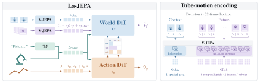

La-JEPA: Compact Robot Policies with Latent World Modeling
A compact world-action policy trained from scratch in V-JEPA 2.1 feature space: state of the art among policies without embodied pretraining on RoboTwin 2.0 and LIBERO-Plus, with far fewer parameters and 2-5x faster inference than video-generator WAMs.
1 Huawei Technologies Ltd.2 University of Toronto3 McGill University4 Mila – Quebec Artificial Intelligence Institute
* Work done as interns at Huawei.
CameraV-JEPA 2.1Video VAE
Cube placement
CameraV-JEPA 2.1Video VAE
Fruit picking
CameraV-JEPA 2.1Video VAE
Push T
CameraV-JEPA 2.1Video VAE
Dishes and utensils
La-JEPA running on a Franka Panda (videos at 1.5× speed). Next to each camera view: the V-JEPA 2.1 features La-JEPA works in, and the video-VAE latents that video-generator policies work in, each projected to colours. In V-JEPA's space the robot, the objects, the table and the wall each get their own colour; the VAE mostly re-encodes appearance.
How these videos were made
One PCA per representation, shared across all four videos, so a colour means the same thing in every clip. Both feature panels get the same display treatment: features are smoothed over time along the optical flow of the camera video, then lightly upscaled with an edge-aware filter guided by the camera image. VAE: Wan2.2, the video model behind Fast-WAM and Faster-WAM.
Pick the space first, then build your policy in it
Recent world-action models start from a large video generator and fine-tune it to output robot actions. That brings useful pretraining, but also the generator's size and its latent space: a video VAE built to reconstruct pixels, not to control a robot.
We try the opposite. La-JEPA picks a latent space suited to control, the features of V-JEPA 2.1, a self-supervised video encoder whose features describe objects and motion, and trains a compact policy from scratch in that space. No generative backbone, no robot-data pretraining.
State-of-the-art performance
Among methods with no embodied pretraining, La-JEPA is #1 on RoboTwin 2.0 and LIBERO-Plus.
✕ No VLM✕ No video generator✕ No generative pretrainingJust V-JEPA 2.1
Success against deployed parameters, frozen encoders included. Hover a point for details. Show as a table
Method
Type
Deployed (B)
Success (%)
How it works
See. V-JEPA 2.1 turns the latest camera frames into a grid of features; the policy lightly adapts the encoder with LoRA.
Imagine, during training only. A World DiT learns to predict the features of the coming frames, while an Action DiT learns to predict the next chunk of actions. Both are trained from scratch.
Act fast. At test time the future is never generated: only actions are sampled. Predicting the future is purely a training signal, so the policy stays small and quick.

La-JEPA trains a World DiT and an Action DiT from scratch in the feature space of a frozen-or-LoRA-adapted V-JEPA 2.1 encoder. Future features are predicted jointly with actions during training; at inference only actions are generated.
What actually matters
We remove one ingredient at a time from the small model and measure the loss. The latent space matters most: swapping V-JEPA features for the video VAE used by video-generator policies costs up to 28 points in randomized RoboTwin scenes. Predicting the future helps everywhere (2 to 5 points), even though the policy never predicts it at test time. Image augmentation is what makes the policy hold up in new scenes.
Loss in success (points) when each component is removed from the final S recipe, all else fixed (one training seed; whiskers: 95% intervals where recorded). Solid: in-distribution; hatched: out-of-distribution. LIBERO-Plus here uses the released instructions.Show as a table
Removed
LIBERO
LIBERO-Plus
RoboTwin clean
RoboTwin rand.
A benchmark bug we fixed along the way
LIBERO-Plus tests robustness by perturbing camera, lighting, layout and more. But its released evaluator also appends the perturbation's settings to the instruction in 8,493 of its 10,030 variants, so most variants silently test a second thing: a corrupted instruction. We restore the instructions and re-evaluate open policies under one protocol.
Training instruction (and ours, corrected)
pick up the alphabet soup and place it in the basket
Released evaluator, camera-viewpoint variant
pick up the alphabet soup and place it in the basket view 0 0 100 2 4 initstate 0
Released instructionsCorrected instructions
LIBERO-Plus success (%) on all 10,030 variants, every policy evaluated in our harness. The corruption costs policies between 0 and 19 points, so released-instruction scores partly rank policies by their sensitivity to corrupted text. †: embodied pretraining.Show as a table
Policy
Released
Corrected
Change
On a real robot
On four Franka Panda tasks, from cube placement to contact-rich pushing and multi-step dish handling, La-JEPA trained only on the task demonstrations reaches the highest average success among policies without robot pretraining, comparable to π0.5, which is pretrained on large robot datasets. Wrist-camera view in the top-left corner; videos at 1.5× speed.
Cube placementFruit pickingPush TDishes and utensils
The paper
Read the abstract
World-action models commonly adapt pretrained video generators, and vision-language-action models build on pretrained vision-language backbones; both tie policy architecture and inference cost to large transformers designed for generation rather than control. While the knowledge accumulated through large-scale pretraining is certainly useful, it remains unclear how much generation-oriented architectural choices affect control performance, and whether the trade-off required to access this pretraining is worth it. While recent world-action models mostly scale the video backbone and its data, we argue that the choice of latent space is just as critical, and that the policy should be trained natively in that space. In this work, we introduce Latent Action JEPA (La-JEPA), a compact world-action model whose policy transformer is trained from scratch in the feature space of a pretrained V-JEPA 2.1 encoder, so that its architecture and capacity can be chosen for control. Following Fast-WAM, La-JEPA learns to predict future features jointly with actions during training and generates only actions at inference. Among policies without embodied pretraining, La-JEPA achieves state-of-the-art performance on RoboTwin 2.0, in clean and randomized scenes when trained on clean demonstrations and on average when trained on the full training set, and on LIBERO-Plus with corrected instructions, while using far fewer parameters than the strongest competing policies. With full training, its success also increases monotonically with model size, showing that the approach scales. Its S and B policies run two to five times faster than Fast-WAM and Faster-WAM while outperforming both on LIBERO-Plus and RoboTwin 2.0. La-JEPA also outperforms the closest JEPA-based methods, LeapBot-WA and JEPA-WAM, on LIBERO-Plus and RoboTwin 2.0 without their pretrained policy backbones. On four real-robot tasks, including contact-heavy pushing and long-horizon multistep manipulation, its average success is comparable to π0.5, outperforming non-embodied-pretrained baselines. Through a design study of the choices behind La-JEPA, we show that JEPA features outperform video VAE latents, most clearly out of distribution, and that training-time future prediction choices significantly impact the policy even when future prediction is skipped at inference. These results establish a compact, efficient foundation for JEPA-based world-action modeling: without a generative pretrained policy backbone, La-JEPA is better and faster than far larger policies built on video and language generation models. Tailoring the policy's design, including its latent space, to control can thus matter more than the knowledge transferred from a heavily pretrained generative backbone, suggesting that robot foundation models may benefit from architectures designed specifically for control rather than inherited from generation.
BibTeX
@article{clemente2026lajepa,
title = {La-JEPA: Compact Robot Policies with Latent World Modeling},
author = {Cl{\'e}mente, Mateo and Xue, George Z. and Abyaneh, Amin and Ma, Liheng and Yang, Rui Heng and Cao, Tongtong and Zhang, Zhanguang and Zhang, Yingxue},
journal = {arXiv preprint arXiv:2611.08156},
year = {2026}
}